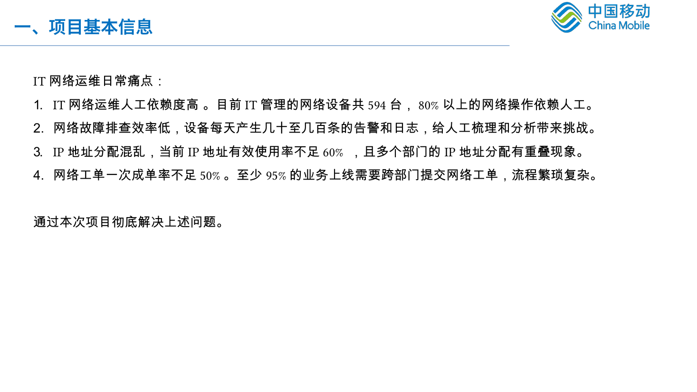
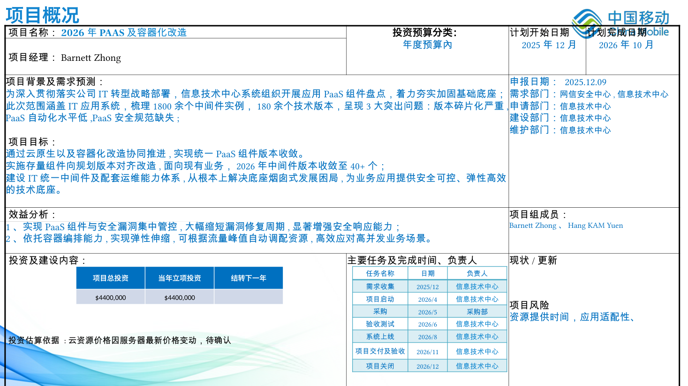

指定页码、对象和期望效果，AI 以 ReAct 工具循环执行：读大纲 → 读页面 → 读表格/查对象 → 提交操作 → 总结。支持"当前页"与"整份文稿"两种范围，最近 12 条对话带入上下文连续追问。
duplicate_slide 复制页（文字+样式+图片+表格+备注全保真，XML 深拷贝+关系重家园化）、add_slide、delete_slide（对象编号自动位移）、move_slide 重排。AI 直接听懂"复制第 1 页生成第 2 页"。
Windows PPT 的项目符号用 Wingdings 私用码（U+F020-U+F0FF），macOS 无此字体导致渲染乱码。三层修复：上传时 garble_fix 自动把 buFont/buChar 换成 Unicode 等价符号；Noto Sans CJK SC 字体装入 LibreOffice；渲染走 launchd 常驻 worker 隔离会话。
上传时自动把 Microsoft YaHei / 微软雅黑 / SimSun / SimHei / 等线（含 UI 变体）声明替换为本机可 PDF 嵌入的 Noto Sans CJK SC（OFL 授权），根治"中文整段消失"。

繁體中文、日文假名、箭头/数学符号、全套中文标点、Emoji 混排全部正常 fallback 渲染。

| 类别 | 操作 |
|---|---|
| 文字 | 全局替换（跨页）、文字高亮、字体统一、批量字号 ±N 磅 |
| 对象 | 对齐分布、复制对象、层级调整（置顶/上移/下移/置底）、替换图片 |
| 表格 | 增删行列、合并单元格（文字保全） |
| 页面 | 背景纯色/渐变、批量页码（活字段）、版式库套用、AI 摘要页生成 |
导出 PDF（含备注版讲义模式）、PNG 打包 zip、TXT 大纲（贴飞书即用）、整份另存副本、图片批量转 PPTX、版本对比（结构化 changelog）。
多步规划：复杂指令先出计划清单逐项执行汇报；undo_last：AI 可自动回退上一轮（连续撤销有血统锚点，undo-undo ≠ redo）；错误自愈：工具失败自动换参数重试；风格模仿：给参考页自动复用字体配色版式；双语：英文提问自动切英文回复。
只读分享链接（带 token、可撤销，发客户看预览）；文档密码保护；操作审计日志（audit.jsonl，界面查最近 50 条）；宏检测（含 vbaProject 的文件转只读预览，防宏病毒）。
lint + fix 确定性自修：每次改稿后自动检查文字溢出/越界/重叠，能修的自动修；结构 diff：版本对比精确到对象级变更；watch 实时预览：SSE 分屏看 AI 改稿过程；渲染 worker 队列：launchd 常驻隔离会话（根治 launchd 链丢字形问题）；渲染缓存+超时降级：部分页先出不整单失败。518 个测试全绿，每个功能测试先行。
| 指标 | 数值 |
|---|---|
| 测试用例 | 518 全绿（v0.1 起每项功能测试先行） |
| 版本 | v0.1 → v0.5.0（5 个 tag，全部推送 GitHub tatuwoods/pptmo） |
| 累计功能 | 44+ 项（页内编辑 5 种 → 22 项批量操作 → 10 项对标功能） |
| 乱码修复 | 极限压测 3 页全绿（6 字体声明 + 6 种 Wingdings 码 + 跨语言混排） |
| 部署 | launchd 常驻（com.tt06.pptlight :8090，KeepAlive 自启）；tailnet 9443 可远程访问 |